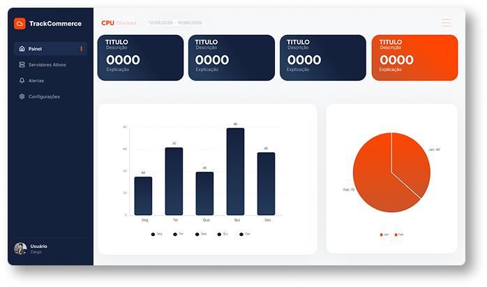

Lentidão no Checkout
Páginas lentas e processos de pagamento demorados fazem seus clientes desistirem da compra e irem para o concorrente.
Tenha visibilidade periódica sobre os principais recursos da sua infraestrutura e identifique sinais de degradação antes que eles se transformem em lentidão, falhas ou perda de vendas.
Conheça nossa solução
Cada segundo de instabilidade tem custo real. Entenda os principais riscos do seu sistema.
Páginas lentas e processos de pagamento demorados fazem seus clientes desistirem da compra e irem para o concorrente.
Quedas, mesmo por poucos minutos, geram grande impacto em vendas, reputação e confiança do cliente.
Picos de utilização de CPU, memória ou armazenamento podem degradar o desempenho dos serviços e aumentar o risco de indisponibilidade.
Picos inesperados de tráfego podem sobrecarregar sua infraestrutura, travando sua operação no momento crítico.
O TrackCommerce monitora continuamente os principais recursos da sua infraestrutura, permitindo acompanhar o desempenho do sistema e identificar sinais de sobrecarga antes que eles se transformem em problemas.
Tenha uma visão clara da evolução dos seus recursos por meio de gráficos e históricos, acompanhe variações de desempenho e receba alertas quando um componente atingir níveis que exigem atenção.
Mais visibilidade para sua infraestrutura. Mais rapidez para agir. Menos riscos para sua operação.
Coleta contínua de todas as métricas críticas da infraestrutura
Motor de análise detecta desvios e anomalias em tempo real
Notificação imediata à equipe com contexto completo do incidente
Resposta rápida com histórico, severidade e ticket automatizado
Acompanhe os principais indicadores da sua infraestrutura e tenha uma visão clara do desempenho da sua operação.
Acompanhe a utilização do processador e identifique picos que possam indicar sobrecarga.
Monitore o consumo de memória e identifique níveis elevados antes que afetem o desempenho.
Monitore o tráfego e o desempenho da rede para identificar possíveis problemas de conectividade.
Acompanhe o tempo de resposta da API de pagamento e identifique possíveis impactos no processo de compra.
Acompanhe o espaço disponível e a utilização do disco para evitar problemas de armazenamento.
Visualize o comportamento dos recursos ao longo do tempo e compare períodos para identificar tendências.
Uma infraestrutura monitorada permite identificar problemas antes que eles afetem sua operação, reduzindo riscos e evitando impactos desnecessários.
Monitore o desempenho da infraestrutura e identifique sinais de sobrecarga antes que eles comprometam a disponibilidade do seu e-commerce.
Acompanhe alterações no comportamento dos recursos e encontre rapidamente o que precisa de atenção.
Uma infraestrutura estável contribui para páginas mais rápidas, processos de compra mais fluidos e uma experiência melhor para seus clientes.
Receba alertas com informações relevantes para que sua equipe possa investigar e agir rapidamente, reduzindo o tempo de resposta aos incidentes.
Um fluxo contínuo que transforma dados da infraestrutura em informações para sua equipe agir rapidamente.
Seus servidores e sistemas geram continuamente informações sobre o desempenho dos recursos monitorados.
Os dados dos principais recursos são coletados periodicamente para acompanhar o estado da infraestrutura.
As métricas são analisadas e comparadas com os níveis definidos para identificar situações que exigem atenção.
Quando um recurso atinge um nível crítico ou de atenção, um alerta é gerado com as informações necessárias para entender o problema.
Sua equipe recebe a notificação pelos canais configurados e pode iniciar a investigação e a resposta ao incidente.
Proteja sua operação antes que os problemas afetem seu negócio. Entre em contato e tenha monitoramento periódico, análises precisas e mais segurança para suas vendas.
Fale Conosco